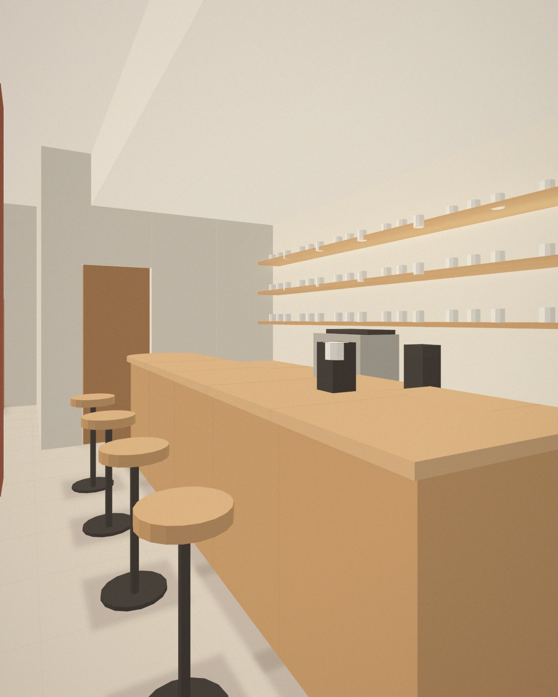

소개
하루를 마친 밤, 달빛 아래 조용히 쉬어 가는 곳.
카페 이야기
달빛은 해가 진 뒤에 문을 여는 작은 카페입니다. 하루를 마친 사람들이 잠시 머물다 갈 수 있는 곳을 생각하며 저녁 여섯 시에 불을 켭니다.
분주한 음악과 주문 소리 대신 낮은 조명과 천천히 내린 커피 한 잔을 준비합니다. 혼자 오셔도, 둘이 오셔도 편히 앉아 계실 수 있도록 자리 사이를 넉넉히 두었습니다.
달빛이라는 이름
하루를 마친 밤,
달빛 아래 조용히 쉬어 가는 곳.
해가 진 뒤에야 문을 여는 카페라서, 밤을 밝히는 달빛을 이름으로 삼았습니다. 보름달 라떼, 초승달 크림 콜드브루, 블루문 토닉처럼 시그니처 메뉴의 이름도 밤하늘에서 빌려 왔습니다.
공간
해방촌 언덕의 오래된 인쇄소 1층, 98㎡에 스물여덟 자리. 평면도와 단면도로 둘러보기



원두
카페에서 많이 찾는 원두 세 가지를 준비했습니다. 커피 메뉴 가운데 일부는 원두를 골라 맛을 바꿀 수 있습니다.